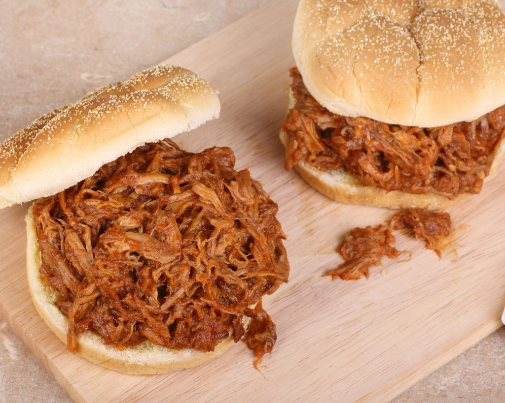

This one is a recipe for the Insta Pot.
Another banger from allrecipes.com. These pulled pork sandwhiches look fantastic.
Ingredients
- 1 tablespoon smoked paprika
- 1 1/2 teaspoons firmly packed light brown sugar
- 1 teaspoon salt
- 1/2 teaspoon ground black pepper
- 2 pounds boneless pork loin roast, cut into 1" cubes
- 1 tablespoon olive oil
- 1 1/2 cups barbeque sauce
- 1 cup water
- 2 (12 count) packages Hawaiian bread rolls
Steps
- Whisk smoked paprika, brown sugar, garlic powder, salt, and black pepper together in a large glass or ceramic bowl. Add pork and toss to evenly coat. Cover the bowl with plastic wrap and marinate in the refrigerator for 30 minutes.
- Turn on a multi-functional pressure cooker (such as Instant Pot®) and select Saute function. Heat oil and cook pork in batches until browned, 5 to 7 minutes. Pour in barbeque sauce and water. Close and lock the lid; select Manual function and set timer for 60 minutes. Allow 10 to 15 minutes for pressure to build.
- Release pressure using the natural-release method according to manufacturer's instructions, 10 to 40 minutes. Unlock and remove lid; transfer pork to a separate plate. Reselect Saute function and simmer sauce until thickened, about 10 minutes. Shred pork with 2 two forks; mix with sauce.
- Slice bread rolls in half and fill with pulled pork; cover with tops.